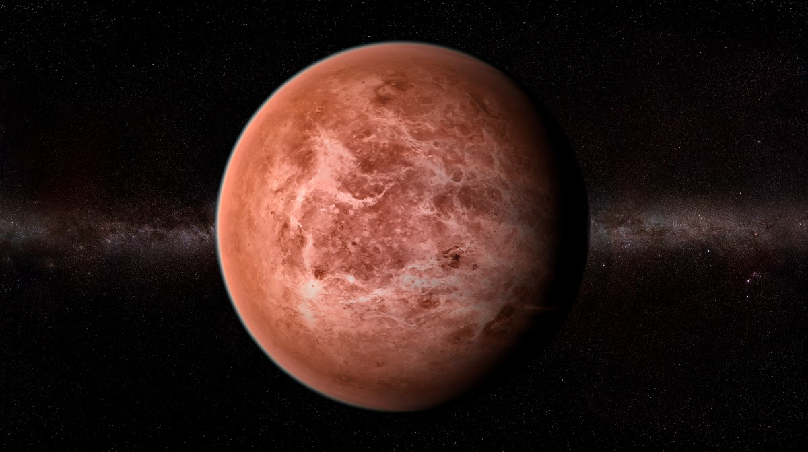

Mercurio es el planeta más pequeño y cercano al Sol en nuestro sistema solar, con una órbita de solo 88 días terrestres. Su superficie está marcada por cráteres, acantilados y llanuras de lava, con temperaturas extremas que oscilan entre los -173 °C durante la noche y los 427 °C durante el día debido a su falta de atmósfera significativa. Estudios recientes sugieren la presencia de agua helada en sus polos, lo que plantea intrigantes preguntas sobre su formación y evolución.
Venus

Venus es el segundo planeta del sistema solar y es conocido como el "planeta gemelo" de la Tierra debido a su tamaño y composición similar. Posee una atmósfera densa compuesta principalmente de dióxido de carbono y nubes de ácido sulfúrico que generan un efecto invernadero descomunal, elevando su temperatura superficial a más de 450 °C. Aunque tiene similitudes con la Tierra, su ambiente extremadamente hostil hace improbable la existencia de vida tal como la conocemos.
Venus es conocido por su densa atmósfera que causa un efecto invernadero descontrolado, convirtiéndolo en el planeta más caliente del sistema solar. Su superficie está marcada por volcanes, cañones y llanuras de lava, sugiriendo una historia geológica activa. Las misiones espaciales, como la sonda Venera y la misión Magallanes, han revelado su atmósfera tóxica y su terreno volcánicamente activo.
